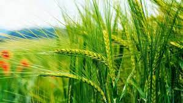

Wheat is a cereal grain that is a staple food in many parts of the world. It is one of the oldest and most important crops, providing a significant source of carbohydrates and nutrients. Wheat cultivation has played a crucial role in the development of civilizations and continues to be a primary food source for millions of people.
Wheat is grown on a large scale globally and contributes significantly to the agricultural economy. The crop has evolved over centuries, with various varieties adapted to different climates and uses.
Wheat is typically grown in cool-season climates. It requires well-drained soil and full sun. The crop is usually planted in the fall or early spring and harvested in the late spring or early summer. Proper cultivation practices are essential for ensuring a healthy and productive wheat crop.
There are several varieties of wheat, each with its unique characteristics and uses. Farmers choose wheat varieties based on factors such as climate, soil type, and intended end-use. Common wheat varieties include:
Wheat is grown in a variety of soils in India. Understanding the soil requirements is crucial for successful wheat cultivation. Key soil considerations include:
Wheat is susceptible to various diseases that can impact crop yield and quality. Understanding and managing these diseases are critical for successful wheat farming. Some common wheat diseases include:
Implementing proper crop rotation, using disease-resistant varieties, and timely application of fungicides are essential for disease management.
Wheat is typically ready for harvest 100 to 150 days after planting, depending on the variety. Harvesting involves picking mature ears when the grains are fully developed. Proper drying and storage are crucial to prevent mold and preserve quality. Farmers employ various techniques such as drying cribs and silos to store wheat for extended periods.
Wheat is a versatile crop with a wide range of culinary uses. It is a staple food for more than half of the world's population and serves as the primary source of carbohydrates for many.